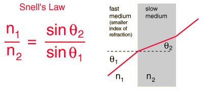

Snell's Law
Snell's Law relates the indices of refraction n of the two media to
the directions of propagation in terms of the angles to the normal. Snell's
law can be derived from Fermat's Principle or from the Fresnel Equations.

Enter data below, then click the symbol of the quantity you wish to calculate.
Enter data and then click on the symbol for the quantity you wish to calculate in the active equation above. The numbers will not be forced to be consistent until you click on the quantity to calculate. Indices of refraction must be greater than or equal to 1, so values less than 1 do not represent a physically possible system.
If the incident medium has the larger index of refraction, then the angle with the normal is increased by refraction. The larger index medium is commonly called the "internal" medium, since air with n=1 is usually the surrounding or "external" medium. You can calculate the condition for total internal reflection by setting the refracted angle = 90° and calculating the incident angle. Since you can't refract the light by more than 90°, all of it will reflect for angles of incidence greater than the angle which gives refraction at 90°.
|